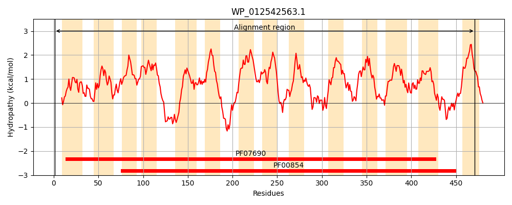
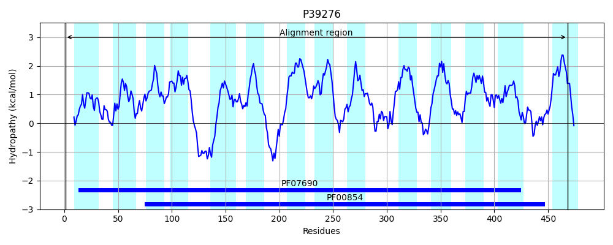
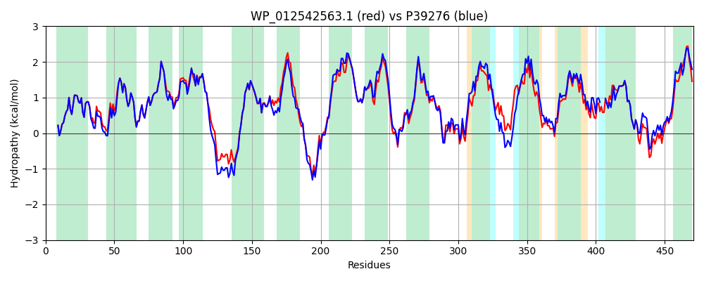

Hit Accession: P39276
Hit TCID: 2.A.17.1.5
Hit Description: gnl|BL_ORD_ID|10249 gnl|TC-DB|P39276|2.A.17.1.5 Probable dipeptide and tripeptide permease YjdL OS=Escherichia coli (strain K12) GN=yjdL PE=1 SV=1
Mach Len: 471
e:0.000000
Query TMS Count : 14
Hit TMS Count: 14
TMS-Overlap Score: 13.400000
Predicted Substrates:CHEBI:7990;peptide
BLAST Alignment:
Score: 2052 , Bit scores: 795 bits, E-value: 0.0e+00, Alignment length: 471, Percentage identity: 84
Query: 1 MKTPSQPRAIYYIVAIQIWEYFSFYGMRALLILYLTHQLGFDDSHAISLFSAYASLVYVTPILGGWLADRLLGNRTAVIAGALLMTLGHVVLGVESTSAWSLYVALAIIICGYGLFKSNISCLLGELYAHDDPRRDGGFSLLYAAGNVGSIAAPIACGLAAQWYGWHIGFALAGIGMFIGLMIFLSGSRHFRHTRGVDKPALRAVKFVLPTWGWLLVMLCLAPVFFTLLLQNNWSGYLLAIVCLFAAQMVARIMIKAPEHRRALWQIVLLMLAGTLFWVLAQQGGSSISLFIDHFVNRRLLNWDVPTALFQSVNAVAVMAAGVVLAWLMRPEGSVRSVLRVWLKFAFGLLLMGGGFMLLALNARHGAADGQASMGMMVAGLAMMGFAELFIDPVAMAQITRLNMPGVTGVLTGIYMLATGAVANWLAGVVAQQTTESQISDTAIAAYQHFFSQMGEWTLGCVAVMVVIAFA 471
MKTPSQPRAIYYIVAIQIWEYFSFYGMRALLILYLTHQLGFDD+HAISLFSAYASLVYVTPILGGWLADRLLGNRTAVIAGALLMTLGHVVLG+++ S +SLY+ALAIIICGYGLFKSNISCLLGELY +D RRDGGFSLLYAAGN+GSIAAPIACGLAAQWYGWH+GFALAG GMFIGL+IFLSG RHF+ TR +DK AL +VKF LP W WL+VMLCLAPVFFTLLL+N+WSGYLLAIVCL AAQ++AR+MIK PEHRRALWQIVLLM GTLFWVLAQQGGS+ISLFID FVNR+ N +VPTALFQSVNA+AVM AGVVLAWL PE S LRVWLKFAFGLLLM GFMLLA +ARH AADGQASMG+M++GLA+MGFAELFIDPVA+AQITRL M +GVLTGIYMLATGAVANWLAGVVAQQTTESQIS AIAAYQ FFSQMGEWTL CVA++VV+AFA
Sbjct: 1 MKTPSQPRAIYYIVAIQIWEYFSFYGMRALLILYLTHQLGFDDNHAISLFSAYASLVYVTPILGGWLADRLLGNRTAVIAGALLMTLGHVVLGIDTNSTFSLYLALAIIICGYGLFKSNISCLLGELYDENDHRRDGGFSLLYAAGNIGSIAAPIACGLAAQWYGWHVGFALAGGGMFIGLLIFLSGHRHFQSTRSMDKKALTSVKFALPVWSWLVVMLCLAPVFFTLLLENDWSGYLLAIVCLIAAQIIARMMIKFPEHRRALWQIVLLMFVGTLFWVLAQQGGSTISLFIDRFVNRQAFNIEVPTALFQSVNAIAVMLAGVVLAWLASPESRGNSTLRVWLKFAFGLLLMACGFMLLAFDARHAAADGQASMGVMISGLALMGFAELFIDPVAIAQITRLKM---SGVLTGIYMLATGAVANWLAGVVAQQTTESQISGMAIAAYQRFFSQMGEWTLACVAIIVVLAFA 468 | Protein Hydropathy Plots: |
|---|
|  |  |
Pairwise Alignment-Hydropathy Plot:
|
|---|
|  |